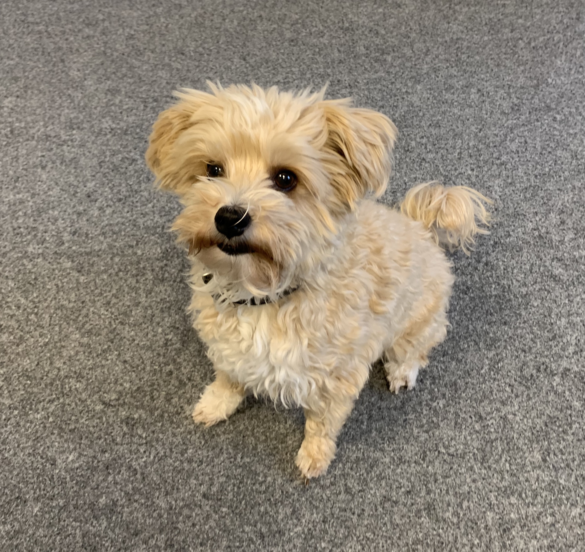

Das Team
Zuverlässig, innovativ und kundenorientiert seit über 60 Jahren

Alexander Gäßler
Geschäftsführer · Fenster-Technik
📞 0821 / 27275–13
Sabrina Gäßler
Innendienst · Abt.-Leitung Kundendienst
Fenster / Haustüren
👤
Christian Neumann
Geschäftsführer · Wintergarten
📞 0821 / 27275–15
👤
Dustin Neumann
Verkauf & Beratung · Wintergarten
👤
Daniela Weber
Innendienst · Telefonzentrale Wintergarten

Cookie 🐕
Kundenbetreuung · Security-Manager
Immer für Sie da!